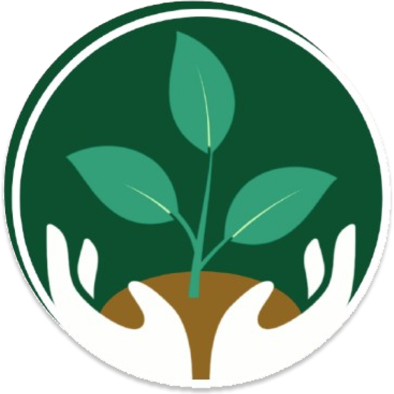
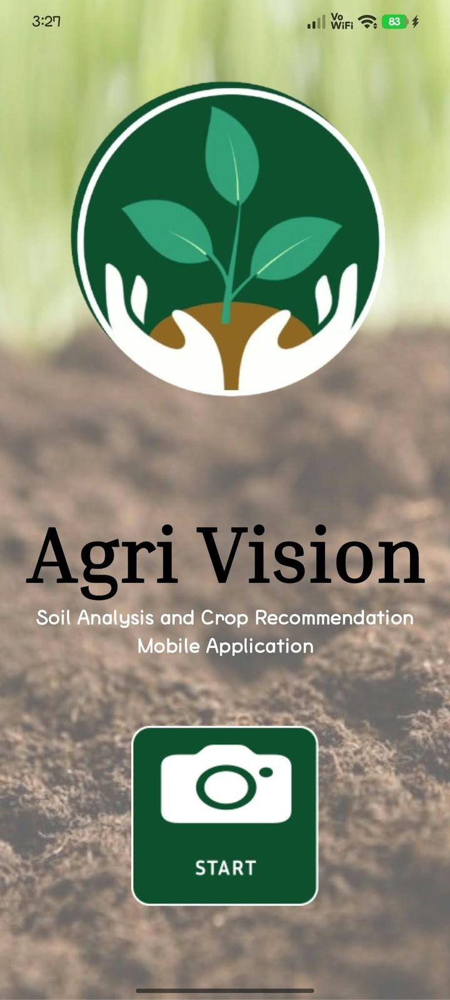
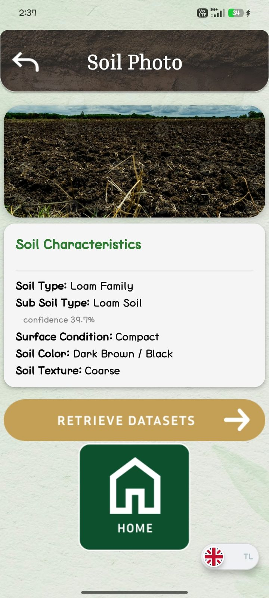
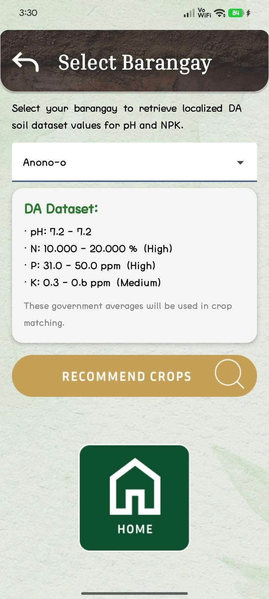
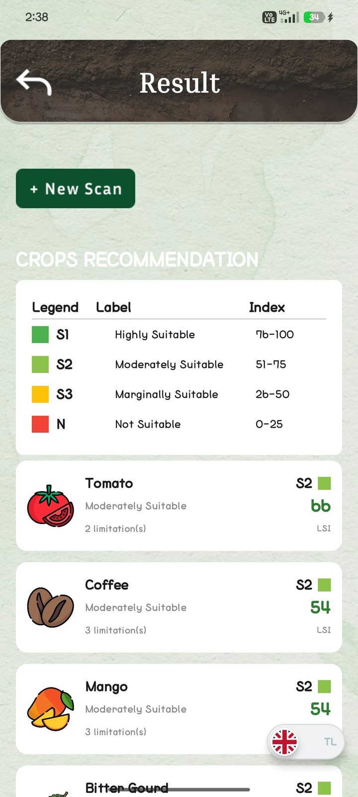
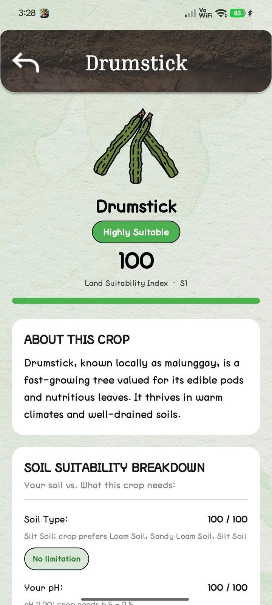

-1){this.src='icon.webp';}else{this.remove();}">Agri Vision
Soil Analysis and Crop Recommendation Mobile Application
ISAT U - Miagao Campus | Works offline | Free
Free download for Android phones. Read the install steps first.





About this app
Take a photo of your soil and Agri Vision tells you its type, color, texture, and surface condition. It then recommends crops that suit your soil and your barangay.
Kunan ng litrato ang lupa at malalaman mo ang uri nito, pati ang mga pananim na bagay dito.
Made for farmers in Guimbal, Iloilo. Everything runs on your phone, so it works even without signal. Tap any text to translate it to Tagalog.
How to install
- Tap the green Install button. Pindutin ang berdeng Install.
- If your browser says the file might be harmful, tap Download anyway. Agri Vision is safe. Kung may babala, pindutin ang "Download anyway."
- Open the downloaded file, sacr.apk. Buksan ang na-download na sacr.apk.
- If asked, tap Settings, turn on "Allow from this source," then go back. I-on ang "Allow from this source," tapos bumalik.
- Tap Install, then Open. Pindutin ang Install, tapos Open.
Data safety
Your photos stay on your phone and are not uploaded anywhere.
The app works without an internet connection.
No account or sign-up is needed.